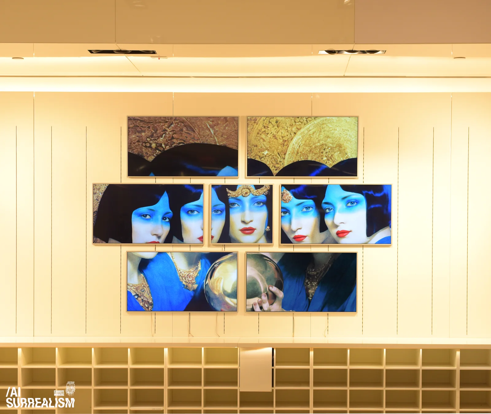

AI Surrealism
Нью-Йорк · The Oculus, Superchief Gallery NFT · 2023
Участие в международной выставке под именем St Laurent Jr.
Для выставки AI Surrealism я создал три работы: An Outsider’s View, Egocentrism и Girl with a Trowel.
Проект объединил сто AI-художников. Выставку организовали Exquisite Workers и Superchief Gallery NFT; куратор — Анна Дарт.
Фотографии и изображения


